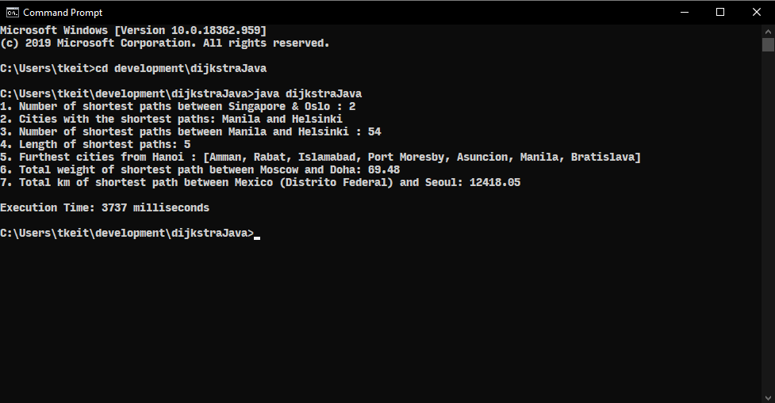

Dijkstra Java
This project is a Java implementation of Dijkstra's algorithm to find the shortest path between 2 nodes. It was based on a algorithm design & analysis module assignment.
The program takes in 3 CSV files as inputs
- Name of cities and their unique identifier
- Longtitude and latitude of the cities
- Cost of travelling (weight) between cities
- Number of shortest paths between 2 cities
- Pair of cities with the highest number of shortest paths
- Number of shortest paths between the pair of cities from output 2.
- Length of shortest paths from output 2.
- Furthest cities from a specified city
- Total weight of the shortest path between 2 specified cities
- Total distance (km) of the shortest path between 2 specified cities
You may view this project here.
Fantasy Team Screen
